Contents
HEADER
%Machine Design project %25 March 2017 close all; clear all;
Given information
theta2 = (0:pi/100:2*pi)'; %angle of the AoA bar (radians) AoA = 7; %mm, length of member 2 BoB = 20; %mm, length of member 5 BC = 100; %mm, length of member 4 AoBo = 45; %mm, length of member 1 (technically just the length between the two fixed points) H = 102; %mm, height of system omega2 = 1; %RPM, rotation of member 2 from motor m = .45; %kg, mass of member 6 k = 175; %N/m, spring constant of spring rho = 1070; %kg/m^3, density of the plastic we are using to make the parts from ry = H-AoBo; %distance between point Ao and the line member 6 slides on
Solving for Position, Velocity, and Acceleration
POSITION
[AC, theta4, theta5, rx] = positionMAT(theta2); % figure; % plot(theta2,theta4,theta2,theta5) % axis([0 2*pi 0 2*pi]) % legend('Theta4','Theta5') % xlabel('Theta2') % grid on
Equation solved. fsolve completed because the vector of function values is near zero as measured by the default value of the function tolerance, and the problem appears regular as measured by the gradient. Equation solved. fsolve completed because the vector of function values is near zero as measured by the default value of the function tolerance, and the problem appears regular as measured by the gradient. Equation solved. fsolve completed because the vector of function values is near zero as measured by the default value of the function tolerance, and the problem appears regular as measured by the gradient. Equation solved. fsolve completed because the vector of function values is near zero as measured by the default value of the function tolerance, and the problem appears regular as measured by the gradient. Equation solved. fsolve completed because the vector of function values is near zero as measured by the default value of the function tolerance, and the problem appears regular as measured by the gradient. Equation solved. fsolve completed because the vector of function values is near zero as measured by the default value of the function tolerance, and the problem appears regular as measured by the gradient. Equation solved. fsolve completed because the vector of function values is near zero as measured by the default value of the function tolerance, and the problem appears regular as measured by the gradient. Equation solved. fsolve completed because the vector of function values is near zero as measured by the default value of the function tolerance, and the problem appears regular as measured by the gradient. Equation solved. fsolve completed because the vector of function values is near zero as measured by the default value of the function tolerance, and the problem appears regular as measured by the gradient. Equation solved. fsolve completed because the vector of function values is near zero as measured by the default value of the function tolerance, and the problem appears regular as measured by the gradient. Equation solved. fsolve completed because the vector of function values is near zero as measured by the default value of the function tolerance, and the problem appears regular as measured by the gradient. Equation solved. fsolve completed because the vector of function values is near zero as measured by the default value of the function tolerance, and the problem appears regular as measured by the gradient. Equation solved. fsolve completed because the vector of function values is near zero as measured by the default value of the function tolerance, and the problem appears regular as measured by the gradient. Equation solved. fsolve completed because the vector of function values is near zero as measured by the default value of the function tolerance, and the problem appears regular as measured by the gradient. Equation solved. fsolve completed because the vector of function values is near zero as measured by the default value of the function tolerance, and the problem appears regular as measured by the gradient. Equation solved. fsolve completed because the vector of function values is near zero as measured by the default value of the function tolerance, and the problem appears regular as measured by the gradient. Equation solved. fsolve completed because the vector of function values is near zero as measured by the default value of the function tolerance, and the problem appears regular as measured by the gradient. Equation solved. fsolve completed because the vector of function values is near zero as measured by the default value of the function tolerance, and the problem appears regular as measured by the gradient. Equation solved. fsolve completed because the vector of function values is near zero as measured by the default value of the function tolerance, and the problem appears regular as measured by the gradient. Equation solved. fsolve completed because the vector of function values is near zero as measured by the default value of the function tolerance, and the problem appears regular as measured by the gradient. Equation solved. fsolve completed because the vector of function values is near zero as measured by the default value of the function tolerance, and the problem appears regular as measured by the gradient. Equation solved. fsolve completed because the vector of function values is near zero as measured by the default value of the function tolerance, and the problem appears regular as measured by the gradient. Equation solved. fsolve completed because the vector of function values is near zero as measured by the default value of the function tolerance, and the problem appears regular as measured by the gradient. Equation solved. fsolve completed because the vector of function values is near zero as measured by the default value of the function tolerance, and the problem appears regular as measured by the gradient. Equation solved. fsolve completed because the vector of function values is near zero as measured by the default value of the function tolerance, and the problem appears regular as measured by the gradient. Equation solved. fsolve completed because the vector of function values is near zero as measured by the default value of the function tolerance, and the problem appears regular as measured by the gradient. Equation solved. fsolve completed because the vector of function values is near zero as measured by the default value of the function tolerance, and the problem appears regular as measured by the gradient. Equation solved. fsolve completed because the vector of function values is near zero as measured by the default value of the function tolerance, and the problem appears regular as measured by the gradient. Equation solved. fsolve completed because the vector of function values is near zero as measured by the default value of the function tolerance, and the problem appears regular as measured by the gradient. Equation solved. fsolve completed because the vector of function values is near zero as measured by the default value of the function tolerance, and the problem appears regular as measured by the gradient. Equation solved. fsolve completed because the vector of function values is near zero as measured by the default value of the function tolerance, and the problem appears regular as measured by the gradient. Equation solved. fsolve completed because the vector of function values is near zero as measured by the default value of the function tolerance, and the problem appears regular as measured by the gradient. Equation solved. fsolve completed because the vector of function values is near zero as measured by the default value of the function tolerance, and the problem appears regular as measured by the gradient. Equation solved. fsolve completed because the vector of function values is near zero as measured by the default value of the function tolerance, and the problem appears regular as measured by the gradient. Equation solved. fsolve completed because the vector of function values is near zero as measured by the default value of the function tolerance, and the problem appears regular as measured by the gradient. Equation solved. fsolve completed because the vector of function values is near zero as measured by the default value of the function tolerance, and the problem appears regular as measured by the gradient. Equation solved. fsolve completed because the vector of function values is near zero as measured by the default value of the function tolerance, and the problem appears regular as measured by the gradient. Equation solved. fsolve completed because the vector of function values is near zero as measured by the default value of the function tolerance, and the problem appears regular as measured by the gradient. Equation solved. fsolve completed because the vector of function values is near zero as measured by the default value of the function tolerance, and the problem appears regular as measured by the gradient. Equation solved. fsolve completed because the vector of function values is near zero as measured by the default value of the function tolerance, and the problem appears regular as measured by the gradient. Equation solved. fsolve completed because the vector of function values is near zero as measured by the default value of the function tolerance, and the problem appears regular as measured by the gradient. Equation solved. fsolve completed because the vector of function values is near zero as measured by the default value of the function tolerance, and the problem appears regular as measured by the gradient. Equation solved. fsolve completed because the vector of function values is near zero as measured by the default value of the function tolerance, and the problem appears regular as measured by the gradient. Equation solved. fsolve completed because the vector of function values is near zero as measured by the default value of the function tolerance, and the problem appears regular as measured by the gradient. Equation solved. fsolve completed because the vector of function values is near zero as measured by the default value of the function tolerance, and the problem appears regular as measured by the gradient. Equation solved. fsolve completed because the vector of function values is near zero as measured by the default value of the function tolerance, and the problem appears regular as measured by the gradient. Equation solved. fsolve completed because the vector of function values is near zero as measured by the default value of the function tolerance, and the problem appears regular as measured by the gradient. Equation solved. fsolve completed because the vector of function values is near zero as measured by the default value of the function tolerance, and the problem appears regular as measured by the gradient. Equation solved. fsolve completed because the vector of function values is near zero as measured by the default value of the function tolerance, and the problem appears regular as measured by the gradient. Equation solved. fsolve completed because the vector of function values is near zero as measured by the default value of the function tolerance, and the problem appears regular as measured by the gradient. Equation solved. fsolve completed because the vector of function values is near zero as measured by the default value of the function tolerance, and the problem appears regular as measured by the gradient. Equation solved. fsolve completed because the vector of function values is near zero as measured by the default value of the function tolerance, and the problem appears regular as measured by the gradient. Equation solved. fsolve completed because the vector of function values is near zero as measured by the default value of the function tolerance, and the problem appears regular as measured by the gradient. Equation solved. fsolve completed because the vector of function values is near zero as measured by the default value of the function tolerance, and the problem appears regular as measured by the gradient. Equation solved. fsolve completed because the vector of function values is near zero as measured by the default value of the function tolerance, and the problem appears regular as measured by the gradient. Equation solved. fsolve completed because the vector of function values is near zero as measured by the default value of the function tolerance, and the problem appears regular as measured by the gradient. Equation solved. fsolve completed because the vector of function values is near zero as measured by the default value of the function tolerance, and the problem appears regular as measured by the gradient. Equation solved. fsolve completed because the vector of function values is near zero as measured by the default value of the function tolerance, and the problem appears regular as measured by the gradient. Equation solved. fsolve completed because the vector of function values is near zero as measured by the default value of the function tolerance, and the problem appears regular as measured by the gradient. Equation solved. fsolve completed because the vector of function values is near zero as measured by the default value of the function tolerance, and the problem appears regular as measured by the gradient. Equation solved. fsolve completed because the vector of function values is near zero as measured by the default value of the function tolerance, and the problem appears regular as measured by the gradient. Equation solved. fsolve completed because the vector of function values is near zero as measured by the default value of the function tolerance, and the problem appears regular as measured by the gradient. Equation solved. fsolve completed because the vector of function values is near zero as measured by the default value of the function tolerance, and the problem appears regular as measured by the gradient. Equation solved. fsolve completed because the vector of function values is near zero as measured by the default value of the function tolerance, and the problem appears regular as measured by the gradient. Equation solved. fsolve completed because the vector of function values is near zero as measured by the default value of the function tolerance, and the problem appears regular as measured by the gradient. Equation solved. fsolve completed because the vector of function values is near zero as measured by the default value of the function tolerance, and the problem appears regular as measured by the gradient. Equation solved. fsolve completed because the vector of function values is near zero as measured by the default value of the function tolerance, and the problem appears regular as measured by the gradient. Equation solved. fsolve completed because the vector of function values is near zero as measured by the default value of the function tolerance, and the problem appears regular as measured by the gradient. Equation solved. fsolve completed because the vector of function values is near zero as measured by the default value of the function tolerance, and the problem appears regular as measured by the gradient. Equation solved. fsolve completed because the vector of function values is near zero as measured by the default value of the function tolerance, and the problem appears regular as measured by the gradient. Equation solved. fsolve completed because the vector of function values is near zero as measured by the default value of the function tolerance, and the problem appears regular as measured by the gradient. Equation solved. fsolve completed because the vector of function values is near zero as measured by the default value of the function tolerance, and the problem appears regular as measured by the gradient. Equation solved. fsolve completed because the vector of function values is near zero as measured by the default value of the function tolerance, and the problem appears regular as measured by the gradient. Equation solved. fsolve completed because the vector of function values is near zero as measured by the default value of the function tolerance, and the problem appears regular as measured by the gradient. Equation solved. fsolve completed because the vector of function values is near zero as measured by the default value of the function tolerance, and the problem appears regular as measured by the gradient. Equation solved. fsolve completed because the vector of function values is near zero as measured by the default value of the function tolerance, and the problem appears regular as measured by the gradient. Equation solved. fsolve completed because the vector of function values is near zero as measured by the default value of the function tolerance, and the problem appears regular as measured by the gradient. Equation solved. fsolve completed because the vector of function values is near zero as measured by the default value of the function tolerance, and the problem appears regular as measured by the gradient. Equation solved. fsolve completed because the vector of function values is near zero as measured by the default value of the function tolerance, and the problem appears regular as measured by the gradient. Equation solved. fsolve completed because the vector of function values is near zero as measured by the default value of the function tolerance, and the problem appears regular as measured by the gradient. Equation solved. fsolve completed because the vector of function values is near zero as measured by the default value of the function tolerance, and the problem appears regular as measured by the gradient. Equation solved. fsolve completed because the vector of function values is near zero as measured by the default value of the function tolerance, and the problem appears regular as measured by the gradient. Equation solved. fsolve completed because the vector of function values is near zero as measured by the default value of the function tolerance, and the problem appears regular as measured by the gradient. Equation solved. fsolve completed because the vector of function values is near zero as measured by the default value of the function tolerance, and the problem appears regular as measured by the gradient. Equation solved. fsolve completed because the vector of function values is near zero as measured by the default value of the function tolerance, and the problem appears regular as measured by the gradient. Equation solved. fsolve completed because the vector of function values is near zero as measured by the default value of the function tolerance, and the problem appears regular as measured by the gradient. Equation solved. fsolve completed because the vector of function values is near zero as measured by the default value of the function tolerance, and the problem appears regular as measured by the gradient. Equation solved. fsolve completed because the vector of function values is near zero as measured by the default value of the function tolerance, and the problem appears regular as measured by the gradient. Equation solved. fsolve completed because the vector of function values is near zero as measured by the default value of the function tolerance, and the problem appears regular as measured by the gradient. Equation solved. fsolve completed because the vector of function values is near zero as measured by the default value of the function tolerance, and the problem appears regular as measured by the gradient. Equation solved. fsolve completed because the vector of function values is near zero as measured by the default value of the function tolerance, and the problem appears regular as measured by the gradient. Equation solved. fsolve completed because the vector of function values is near zero as measured by the default value of the function tolerance, and the problem appears regular as measured by the gradient. Equation solved. fsolve completed because the vector of function values is near zero as measured by the default value of the function tolerance, and the problem appears regular as measured by the gradient. Equation solved. fsolve completed because the vector of function values is near zero as measured by the default value of the function tolerance, and the problem appears regular as measured by the gradient. Equation solved. fsolve completed because the vector of function values is near zero as measured by the default value of the function tolerance, and the problem appears regular as measured by the gradient. Equation solved. fsolve completed because the vector of function values is near zero as measured by the default value of the function tolerance, and the problem appears regular as measured by the gradient. Equation solved. fsolve completed because the vector of function values is near zero as measured by the default value of the function tolerance, and the problem appears regular as measured by the gradient. Equation solved. fsolve completed because the vector of function values is near zero as measured by the default value of the function tolerance, and the problem appears regular as measured by the gradient. Equation solved. fsolve completed because the vector of function values is near zero as measured by the default value of the function tolerance, and the problem appears regular as measured by the gradient. Equation solved. fsolve completed because the vector of function values is near zero as measured by the default value of the function tolerance, and the problem appears regular as measured by the gradient. Equation solved. fsolve completed because the vector of function values is near zero as measured by the default value of the function tolerance, and the problem appears regular as measured by the gradient. Equation solved. fsolve completed because the vector of function values is near zero as measured by the default value of the function tolerance, and the problem appears regular as measured by the gradient. Equation solved. fsolve completed because the vector of function values is near zero as measured by the default value of the function tolerance, and the problem appears regular as measured by the gradient. Equation solved. fsolve completed because the vector of function values is near zero as measured by the default value of the function tolerance, and the problem appears regular as measured by the gradient. Equation solved. fsolve completed because the vector of function values is near zero as measured by the default value of the function tolerance, and the problem appears regular as measured by the gradient. Equation solved. fsolve completed because the vector of function values is near zero as measured by the default value of the function tolerance, and the problem appears regular as measured by the gradient. Equation solved. fsolve completed because the vector of function values is near zero as measured by the default value of the function tolerance, and the problem appears regular as measured by the gradient. Equation solved. fsolve completed because the vector of function values is near zero as measured by the default value of the function tolerance, and the problem appears regular as measured by the gradient. Equation solved. fsolve completed because the vector of function values is near zero as measured by the default value of the function tolerance, and the problem appears regular as measured by the gradient. Equation solved. fsolve completed because the vector of function values is near zero as measured by the default value of the function tolerance, and the problem appears regular as measured by the gradient. Equation solved. fsolve completed because the vector of function values is near zero as measured by the default value of the function tolerance, and the problem appears regular as measured by the gradient. Equation solved. fsolve completed because the vector of function values is near zero as measured by the default value of the function tolerance, and the problem appears regular as measured by the gradient. Equation solved. fsolve completed because the vector of function values is near zero as measured by the default value of the function tolerance, and the problem appears regular as measured by the gradient. Equation solved. fsolve completed because the vector of function values is near zero as measured by the default value of the function tolerance, and the problem appears regular as measured by the gradient. Equation solved. fsolve completed because the vector of function values is near zero as measured by the default value of the function tolerance, and the problem appears regular as measured by the gradient. Equation solved. fsolve completed because the vector of function values is near zero as measured by the default value of the function tolerance, and the problem appears regular as measured by the gradient. Equation solved. fsolve completed because the vector of function values is near zero as measured by the default value of the function tolerance, and the problem appears regular as measured by the gradient. Equation solved. fsolve completed because the vector of function values is near zero as measured by the default value of the function tolerance, and the problem appears regular as measured by the gradient. Equation solved. fsolve completed because the vector of function values is near zero as measured by the default value of the function tolerance, and the problem appears regular as measured by the gradient. Equation solved. fsolve completed because the vector of function values is near zero as measured by the default value of the function tolerance, and the problem appears regular as measured by the gradient. Equation solved. fsolve completed because the vector of function values is near zero as measured by the default value of the function tolerance, and the problem appears regular as measured by the gradient. Equation solved. fsolve completed because the vector of function values is near zero as measured by the default value of the function tolerance, and the problem appears regular as measured by the gradient. Equation solved. fsolve completed because the vector of function values is near zero as measured by the default value of the function tolerance, and the problem appears regular as measured by the gradient. Equation solved. fsolve completed because the vector of function values is near zero as measured by the default value of the function tolerance, and the problem appears regular as measured by the gradient. Equation solved. fsolve completed because the vector of function values is near zero as measured by the default value of the function tolerance, and the problem appears regular as measured by the gradient. Equation solved. fsolve completed because the vector of function values is near zero as measured by the default value of the function tolerance, and the problem appears regular as measured by the gradient. Equation solved. fsolve completed because the vector of function values is near zero as measured by the default value of the function tolerance, and the problem appears regular as measured by the gradient. Equation solved. fsolve completed because the vector of function values is near zero as measured by the default value of the function tolerance, and the problem appears regular as measured by the gradient. Equation solved. fsolve completed because the vector of function values is near zero as measured by the default value of the function tolerance, and the problem appears regular as measured by the gradient. Equation solved. fsolve completed because the vector of function values is near zero as measured by the default value of the function tolerance, and the problem appears regular as measured by the gradient. Equation solved. fsolve completed because the vector of function values is near zero as measured by the default value of the function tolerance, and the problem appears regular as measured by the gradient. Equation solved. fsolve completed because the vector of function values is near zero as measured by the default value of the function tolerance, and the problem appears regular as measured by the gradient. Equation solved. fsolve completed because the vector of function values is near zero as measured by the default value of the function tolerance, and the problem appears regular as measured by the gradient. Equation solved. fsolve completed because the vector of function values is near zero as measured by the default value of the function tolerance, and the problem appears regular as measured by the gradient. Equation solved. fsolve completed because the vector of function values is near zero as measured by the default value of the function tolerance, and the problem appears regular as measured by the gradient. Equation solved. fsolve completed because the vector of function values is near zero as measured by the default value of the function tolerance, and the problem appears regular as measured by the gradient. Equation solved. fsolve completed because the vector of function values is near zero as measured by the default value of the function tolerance, and the problem appears regular as measured by the gradient. Equation solved. fsolve completed because the vector of function values is near zero as measured by the default value of the function tolerance, and the problem appears regular as measured by the gradient. Equation solved. fsolve completed because the vector of function values is near zero as measured by the default value of the function tolerance, and the problem appears regular as measured by the gradient. Equation solved. fsolve completed because the vector of function values is near zero as measured by the default value of the function tolerance, and the problem appears regular as measured by the gradient. Equation solved. fsolve completed because the vector of function values is near zero as measured by the default value of the function tolerance, and the problem appears regular as measured by the gradient. Equation solved. fsolve completed because the vector of function values is near zero as measured by the default value of the function tolerance, and the problem appears regular as measured by the gradient. Equation solved. fsolve completed because the vector of function values is near zero as measured by the default value of the function tolerance, and the problem appears regular as measured by the gradient. Equation solved. fsolve completed because the vector of function values is near zero as measured by the default value of the function tolerance, and the problem appears regular as measured by the gradient. Equation solved. fsolve completed because the vector of function values is near zero as measured by the default value of the function tolerance, and the problem appears regular as measured by the gradient. Equation solved. fsolve completed because the vector of function values is near zero as measured by the default value of the function tolerance, and the problem appears regular as measured by the gradient. Equation solved. fsolve completed because the vector of function values is near zero as measured by the default value of the function tolerance, and the problem appears regular as measured by the gradient. Equation solved. fsolve completed because the vector of function values is near zero as measured by the default value of the function tolerance, and the problem appears regular as measured by the gradient. Equation solved. fsolve completed because the vector of function values is near zero as measured by the default value of the function tolerance, and the problem appears regular as measured by the gradient. Equation solved. fsolve completed because the vector of function values is near zero as measured by the default value of the function tolerance, and the problem appears regular as measured by the gradient. Equation solved. fsolve completed because the vector of function values is near zero as measured by the default value of the function tolerance, and the problem appears regular as measured by the gradient. Equation solved. fsolve completed because the vector of function values is near zero as measured by the default value of the function tolerance, and the problem appears regular as measured by the gradient. Equation solved. fsolve completed because the vector of function values is near zero as measured by the default value of the function tolerance, and the problem appears regular as measured by the gradient. Equation solved. fsolve completed because the vector of function values is near zero as measured by the default value of the function tolerance, and the problem appears regular as measured by the gradient. Equation solved. fsolve completed because the vector of function values is near zero as measured by the default value of the function tolerance, and the problem appears regular as measured by the gradient. Equation solved. fsolve completed because the vector of function values is near zero as measured by the default value of the function tolerance, and the problem appears regular as measured by the gradient. Equation solved. fsolve completed because the vector of function values is near zero as measured by the default value of the function tolerance, and the problem appears regular as measured by the gradient. Equation solved. fsolve completed because the vector of function values is near zero as measured by the default value of the function tolerance, and the problem appears regular as measured by the gradient. Equation solved. fsolve completed because the vector of function values is near zero as measured by the default value of the function tolerance, and the problem appears regular as measured by the gradient. Equation solved. fsolve completed because the vector of function values is near zero as measured by the default value of the function tolerance, and the problem appears regular as measured by the gradient. Equation solved. fsolve completed because the vector of function values is near zero as measured by the default value of the function tolerance, and the problem appears regular as measured by the gradient. Equation solved. fsolve completed because the vector of function values is near zero as measured by the default value of the function tolerance, and the problem appears regular as measured by the gradient. Equation solved. fsolve completed because the vector of function values is near zero as measured by the default value of the function tolerance, and the problem appears regular as measured by the gradient. Equation solved. fsolve completed because the vector of function values is near zero as measured by the default value of the function tolerance, and the problem appears regular as measured by the gradient. Equation solved. fsolve completed because the vector of function values is near zero as measured by the default value of the function tolerance, and the problem appears regular as measured by the gradient. Equation solved. fsolve completed because the vector of function values is near zero as measured by the default value of the function tolerance, and the problem appears regular as measured by the gradient. Equation solved. fsolve completed because the vector of function values is near zero as measured by the default value of the function tolerance, and the problem appears regular as measured by the gradient. Equation solved. fsolve completed because the vector of function values is near zero as measured by the default value of the function tolerance, and the problem appears regular as measured by the gradient. Equation solved. fsolve completed because the vector of function values is near zero as measured by the default value of the function tolerance, and the problem appears regular as measured by the gradient. Equation solved. fsolve completed because the vector of function values is near zero as measured by the default value of the function tolerance, and the problem appears regular as measured by the gradient. Equation solved. fsolve completed because the vector of function values is near zero as measured by the default value of the function tolerance, and the problem appears regular as measured by the gradient. Equation solved. fsolve completed because the vector of function values is near zero as measured by the default value of the function tolerance, and the problem appears regular as measured by the gradient. Equation solved. fsolve completed because the vector of function values is near zero as measured by the default value of the function tolerance, and the problem appears regular as measured by the gradient. Equation solved. fsolve completed because the vector of function values is near zero as measured by the default value of the function tolerance, and the problem appears regular as measured by the gradient. Equation solved. fsolve completed because the vector of function values is near zero as measured by the default value of the function tolerance, and the problem appears regular as measured by the gradient. Equation solved. fsolve completed because the vector of function values is near zero as measured by the default value of the function tolerance, and the problem appears regular as measured by the gradient. Equation solved. fsolve completed because the vector of function values is near zero as measured by the default value of the function tolerance, and the problem appears regular as measured by the gradient. Equation solved. fsolve completed because the vector of function values is near zero as measured by the default value of the function tolerance, and the problem appears regular as measured by the gradient. Equation solved. fsolve completed because the vector of function values is near zero as measured by the default value of the function tolerance, and the problem appears regular as measured by the gradient. Equation solved. fsolve completed because the vector of function values is near zero as measured by the default value of the function tolerance, and the problem appears regular as measured by the gradient. Equation solved. fsolve completed because the vector of function values is near zero as measured by the default value of the function tolerance, and the problem appears regular as measured by the gradient. Equation solved. fsolve completed because the vector of function values is near zero as measured by the default value of the function tolerance, and the problem appears regular as measured by the gradient. Equation solved. fsolve completed because the vector of function values is near zero as measured by the default value of the function tolerance, and the problem appears regular as measured by the gradient. Equation solved. fsolve completed because the vector of function values is near zero as measured by the default value of the function tolerance, and the problem appears regular as measured by the gradient. Equation solved. fsolve completed because the vector of function values is near zero as measured by the default value of the function tolerance, and the problem appears regular as measured by the gradient. Equation solved. fsolve completed because the vector of function values is near zero as measured by the default value of the function tolerance, and the problem appears regular as measured by the gradient. Equation solved. fsolve completed because the vector of function values is near zero as measured by the default value of the function tolerance, and the problem appears regular as measured by the gradient. Equation solved. fsolve completed because the vector of function values is near zero as measured by the default value of the function tolerance, and the problem appears regular as measured by the gradient. Equation solved. fsolve completed because the vector of function values is near zero as measured by the default value of the function tolerance, and the problem appears regular as measured by the gradient. Equation solved. fsolve completed because the vector of function values is near zero as measured by the default value of the function tolerance, and the problem appears regular as measured by the gradient. Equation solved. fsolve completed because the vector of function values is near zero as measured by the default value of the function tolerance, and the problem appears regular as measured by the gradient. Equation solved. fsolve completed because the vector of function values is near zero as measured by the default value of the function tolerance, and the problem appears regular as measured by the gradient. Equation solved. fsolve completed because the vector of function values is near zero as measured by the default value of the function tolerance, and the problem appears regular as measured by the gradient. Equation solved. fsolve completed because the vector of function values is near zero as measured by the default value of the function tolerance, and the problem appears regular as measured by the gradient. Equation solved. fsolve completed because the vector of function values is near zero as measured by the default value of the function tolerance, and the problem appears regular as measured by the gradient. Equation solved. fsolve completed because the vector of function values is near zero as measured by the default value of the function tolerance, and the problem appears regular as measured by the gradient. Equation solved. fsolve completed because the vector of function values is near zero as measured by the default value of the function tolerance, and the problem appears regular as measured by the gradient. Equation solved. fsolve completed because the vector of function values is near zero as measured by the default value of the function tolerance, and the problem appears regular as measured by the gradient. Equation solved. fsolve completed because the vector of function values is near zero as measured by the default value of the function tolerance, and the problem appears regular as measured by the gradient. Equation solved. fsolve completed because the vector of function values is near zero as measured by the default value of the function tolerance, and the problem appears regular as measured by the gradient. Equation solved. fsolve completed because the vector of function values is near zero as measured by the default value of the function tolerance, and the problem appears regular as measured by the gradient.
VELOCITY
[AC_prime, omega4, omega5, rx_prime] = velocityMAT(AC, theta2, theta4, theta5); % check accuracy by plotting rx and its derivative % figure; % plot(theta2, rx,'b',theta2, rx_prime,'g') % grid on % ACCELERATION [AC_dprime, alpha4, alpha5, rx_dprime] = accelerationMAT(AC, AC_prime, theta2, theta4, theta5, omega4, omega5); % figure; % plot(theta2, rx_prime,'b', theta2, rx_dprime, 'g') % % plot(theta2, rx_prime,'b', theta2, rx_dprime, 'm', [2.073 2.073] , [-20 20],'k') % % plot(theta2, rx_prime,'b', theta2, rx_dprime, 'm') % grid on
Solving Equations of Motion
%theta2 = 0:(2*pi)/100:(2*pi); % a random range of thetas to test the function %Element 2 Element2Values = Element2(theta2); %[rcm2ax rcm2ay vcm2ax vcm2ay acm2x acm2y] %Element 3 Element3Values = Element3(theta2); %[rax ray vax vay aax aay] %Element 4 %requires theta4, omega4, and alpha4 to run - code exists otherwise Element4Values = Element4(theta2,theta4,omega4,alpha4); %[rcm4x rcm4y vcm4x vcm4y acm4x acm4y] %Element 5 %requries thetaa5, omega5, and alpha5 to run - code exists otherwise Element5Values = Element5(theta5,omega5,alpha5); %Element 6 %requires theta5, theta4, omega5, omega4, alpha5, and alpha4 to run, %otherwise ready to go Element6Values = Element6(rx, rx_prime, rx_dprime); % Plotting graph 1 figure; plot(Element2Values(1,:),Element2Values(2,:),'Linewidth',2); hold on; % plot(Element3Values(1,:),Element3Values(2,:)); % plot(Element4Values(1,:),Element4Values(2,:)); plot(Element5Values(1,:),Element5Values(2,:)-AoBo,'Linewidth',2); plot(-1*Element6Values(1,:),Element6Values(2,:),'Linewidth',2); % We have a -1 in this b/c this accounts for the negative direction of point C title('Position of Points A,B,C') xlabel('X Displacement (mm)') ylabel('Y Displacement (mm)') legend('Point A','Point B','Point C'); ylim([-50 60]); xlim([-70 30]); grid on;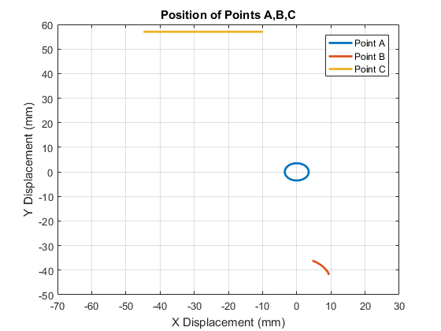
Graph 2
figure; plot(theta2*180/pi,Element6Values(1,:)); grid on; title('X-position of Point C versus Crank Angle'); xlabel('Crank Angle (deg°)'); ylabel('X-position (mm)'); xlim([0 360]);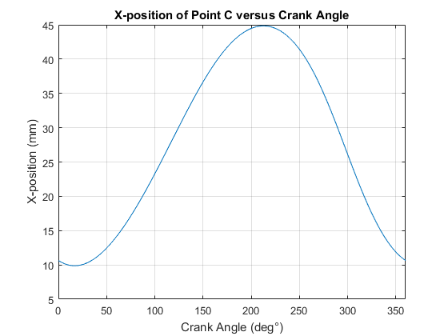
Graph 3
figure; graph3(Element6Values, theta2);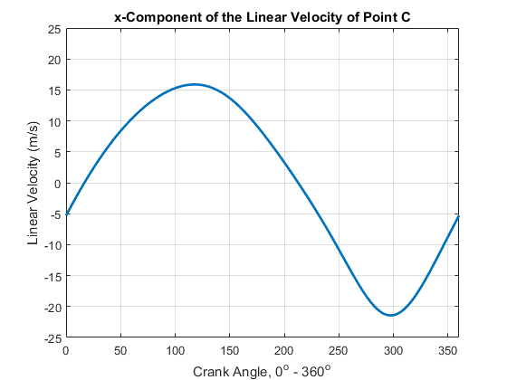
Graph 4
figure; graph4(Element2Values,Element4Values, ... Element5Values,Element6Values, theta2); xlabel('Crank angle 0-360^o') ylabel('Acceleration (m/s^2)') title('Maginitude of Linear Acceleration of Centers of Mass')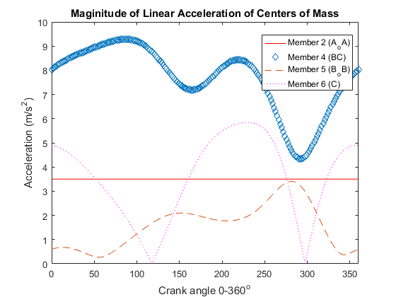
Solving for Forces and plotting
Plots and returns reactive forces at the pins, and moment about part 2
figure; [F_RC,F_RB,F_RBo,F_RA,F_RAo,M2,... R23x,R23y,RAoy,RAox,R43,RBy,RBx,R64y,R64x,RBox,RBoy,RC] = ... funk_so_brotha(theta2, theta4, theta5, AoA, BoB, BC, AC, Element6Values(5,:),rx); % [F_RC,F_RB,F_RBo,F_RA,F_RAo,M2] = ... % pinforces(Element6Values(5,:),... % rx,theta2,theta4,theta5,AC); % Calculate Shear, axial and bending moments [axialF,shearF,moment,x2,x4,x5] = ... AVMcalc_newnew(F_RC,F_RB,F_RBo,F_RA,F_RAo,M2,Element6Values(5,:),... rx,theta2,theta4,theta5,AC,... R23x,R23y,RAoy,RAox,R43,RBy,RBx,R64y,R64x,RBox,RBoy,RC); % AVMplot creates 3D plots for deliverable % h,i,j and returns max and min values of the different forces % Figure are created in function % [maxAF,minAF] = AVMplots1(x2,x4,x5,axialF,theta2,theta4,theta5); % h Axial force plot % % [maxVF,minVF] = AVMplots2(x2,x4,x5,shearF,theta2,theta4,theta5); % i Shear Force plot % % [maxM,minM] = AVMplots3(x2,x4,x5,moment,theta2,theta4,theta5); % j Bending moment plot
A2_min =
-6.8762
V2_min =
-23.9475
Mom2_min =
-141.9177
A4_min =
-9.7190
V4_min =
-24.8364
Mom4_min =
-1.5477e+03
A5_min =
-20.1132
V5_min =
0
Mom5_min =
0
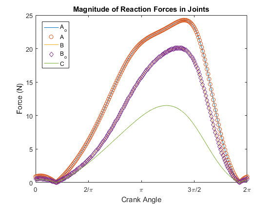 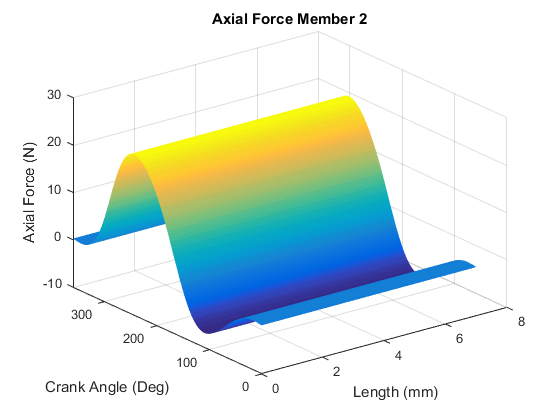 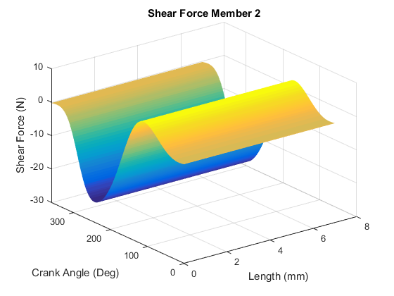 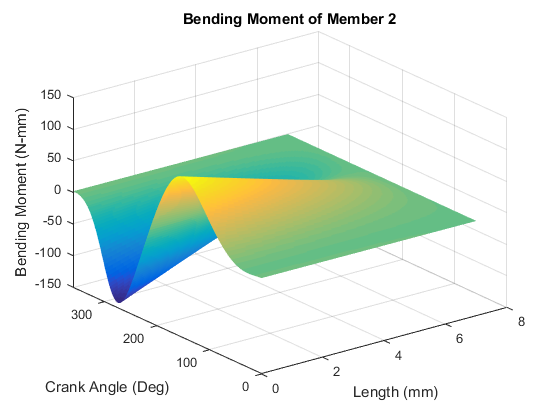  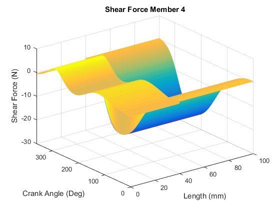 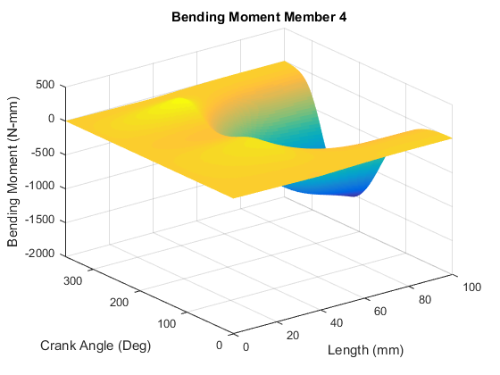 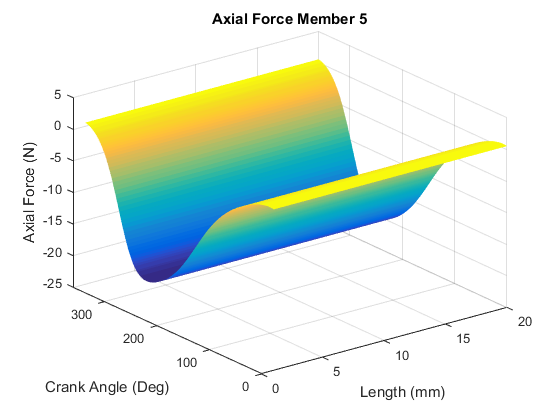 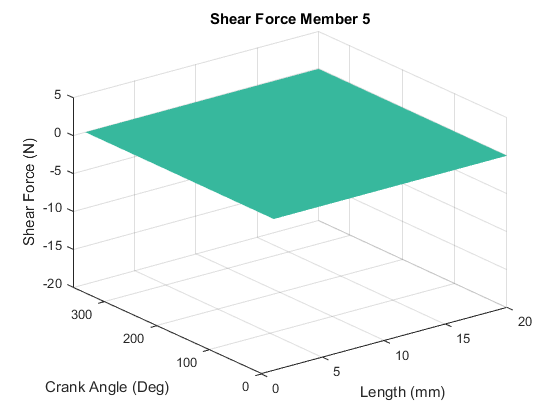 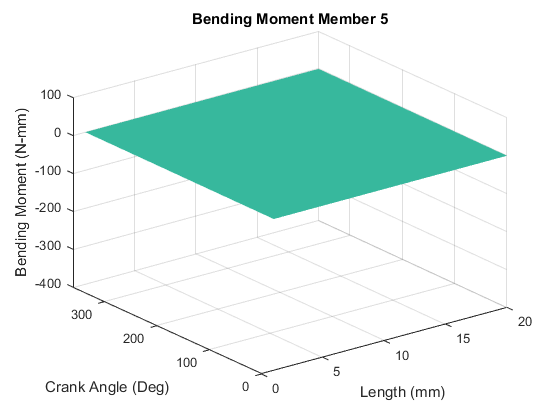
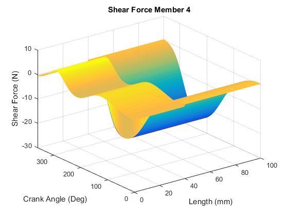 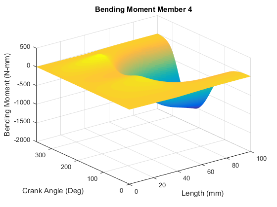 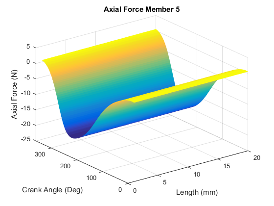 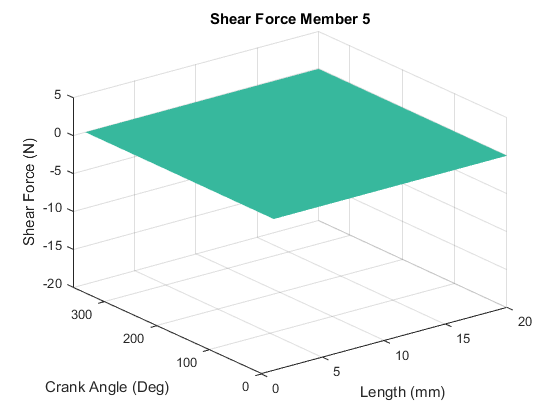 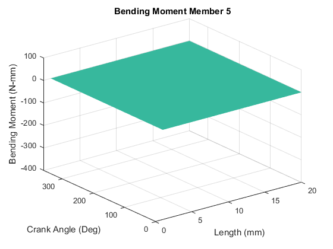